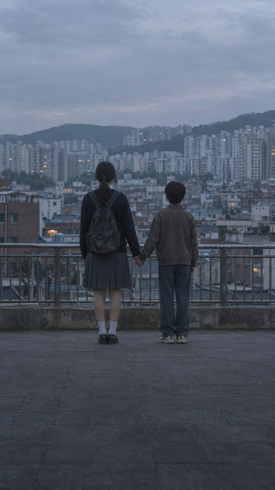
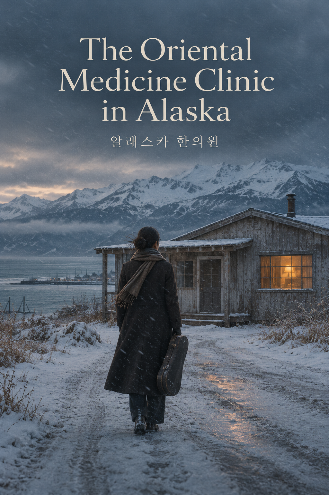

The project
Office romantic comedy
The Breakup Handover Report
연애인수인계보고서
Series · 12 × 60 min
At a glance
The Breakup Handover Report
A woman is dumped by the boyfriend she started a company with. Before she can leave, she has to hand over all of it, the work and the love, and write up her breakup like a handover report.
Synopsis
Synopsis
Yuna is a team leader at Maytree, a small company in Gasan Digital Complex. She started it with her ex-boyfriend, Hyung-jae, but caught between lingering feelings and a sense of responsibility, she has spent six months putting off quitting.
Meanwhile, Shin-woo loses his job as a new recruit at a large corporation after an assault incident and drifts from one day-labor job to another. On the subway, he gets caught up in a scuffle when Yuna tries to grab a groper, and the two get off to a bad start. A few days later, Shin-woo is hired at Maytree through connections. When Eun-seo, someone from Hyung-jae’s circle, also arrives, office life becomes even more complicated.
Yuna receives a job offer from Unis, a company Maytree does business with, and Hyung-jae grows uneasy. On a business trip, she happens to discover his new girlfriend, Ahn Seon-a, and feels deeply betrayed. Drunk, she tells Shin-woo, ‘Let’s deceive them too,’ and kisses him out of nowhere. After the kiss on the beach, they grow closer. Hyung-jae cannot hide his jealousy and finds himself drawn back to Yuna. Shin-woo denies his feelings for her, but they only deepen. As these relationships become harder to separate from work, Yuna has to decide what she wants from love and how to leave on her own terms.
Character relationships
Pink: love and care
Gold: conflict
Grey: family and work
Why Japan
Why Japan?
The story takes place at a seven-person start-up in Gasan Digital Complex. Its conflicts over quitting, unpaid wages and employment may also be familiar to people working at small companies in Japan.
Japan has comparable small-business and subcontracting structures, as well as cases of hiring through connections, unpaid wages and subsidy fraud. We would like to work with a Japanese partner on how to adapt these elements to local business practices.
The twelve episodes could be discussed as a single season of a Japanese drama. The sixty-minute running time would need to be reviewed against the broadcaster’s slot, advertising time and platform requirements.
Development & team
Scripts for ep. 1-6, outlines for ep. 7-12
Series · 12 × 60 min · Office romantic comedy
Producers
Younghoon Ham, Producer. Head of Content, Studio Flow (2022-present). Former Head of Drama at JTBC and Head of Production at JTBC Studios (2016-2022); drama director and producer at KBS (1998-2016). Executive-level credits include Love Affair, We Are All Trying Here, Pro Bono and Descendants of the Sun.
Jae Lee (Yongjae Lee), Producer. Producer, Studio Flow (2022-present). Producer: We Are All Trying Here, The Frog. Production producer: Doctor Lawyer, Reflection of You. Overseas-shoot producer: Surely Tomorrow, Humint, You and Everything Else, Reflection of You, A Piece of Your Mind.
Writer
Kim Na-ra
Story writer of the webtoon team Lala Sister. Author of the original webtoon behind the feature film Spring, Again (2019). Webtoon series published on Naver Webtoon (2022) and Kakao Webtoon (2018).
What we are looking for
A partner in Japan
A co-development partner among Japanese broadcasters, streaming platforms and production companies. A Japanese producer can come in from the development of episodes 7-12.
Either a sale of Japanese remake rights or parallel development in Korea and Japan, including a localized Japanese version.
Discuss this project ↗
The project
Ensemble romantic comedy
Right Then, Right Now
지금도 맞고 그때도 맞다
Series · 8 × 70 min
At a glance
Right Then, Right Now
No longer students chasing a dream, and not the preachy elders who gave theirs up either. A brutally honest romantic comedy about love and friendship among four friends who have just turned thirty.
Synopsis
Synopsis
Yu-rim, Seung-hyun, Wan-hee and Rak-geon were classmates in French literature and have had each other’s backs ever since. Now in their early thirties, they are each struggling with love, marriage and the dreams they started out with.
Yu-rim quit her publishing job to write novels and pays the rent with sponsored blog reviews and whatever else she can find. Seung-hyun, her on-and-off boyfriend of twelve years, has talent and luck in equal measure and has never had to try very hard at anything, but what he really wants is Yu-rim. Wan-hee, the realist, left the civil service, rode the stock and crypto markets, and opened a café with what was left. She believes life is one more wave to ride. Rak-geon lives for his band and lets the future take care of itself.
Yu-rim is told to move out of her studio flat. Soon after, the novel she has long been polishing is turned down at a meeting with a publisher. That evening she goes to what she thinks is a dinner with Seung-hyun’s parents. It turns out to be a formal meeting between the two families to discuss a wedding, and she is the only one who didn’t know. Seung-hyun’s mother had promised to get them a home in Seoul if they married this year, so Seung-hyun set it all up without asking her.
After the dinner he gets down on one knee and proposes. Yu-rim says no. She is angry that he pushed a wedding on her without a word, and she has not yet reached her own dream, so she is not going to marry just because a home comes with it. Then, on the same day, her own parents announce that they are going to live apart without getting divorced, a choice Koreans call jolhon. The next day she tells her friends, but apart from Rak-geon they all ask why she would turn down a proposal that comes with a home in Seoul. From then on, one question follows all four friends around: is marriage a practical deal, or proof of love?
Each of them answers it differently. Wan-hee’s first love, Min-hee, returns married to a man and texts her late at night. Rak-geon falls for a woman who does not believe love has to be limited to one person. Yu-rim and Seung-hyun move in together, break up by text, make up, and fly to Jeju over a pregnancy scare that turns out to be nothing. Wan-hee meets Asako, a young Japanese woman who has just arrived in Seoul.
The wedding in the final episode goes badly wrong. A brawl breaks out and the police arrive. Rak-geon’s unhinged wedding song, ‘If this is how it’s going to be, don’t get married!’, is livestreamed and goes viral. They get married anyway. Then Seung-hyun leaves for Paris, while Yu-rim stays in Seoul to finish her book.
Character relationships
Pink: love and care
Gold: conflict
Grey: family and work
Why Japan
Why Japan?
There is no agreed answer to what matters most: love, marriage, dreams or security. Each character has to work out what suits them. Most of the story happens through conversations between people who know each other too well, with bigger comic scenes around the pregnancy scare and the wedding.
The four friends give the series the kind of character-led ensemble familiar from Japanese youth dramas. Having four leads allows for a wider range of casting. Their different expectations of love also give viewers more to discuss.
The series deals with questions also faced by people in their thirties in Japan: marrying later, choosing not to marry, putting off marriage because money is tight, and choosing between work they love and financial security.
Development & team
Scripts for all 8 episodes
Series · 8 × 70 min · Ensemble romantic comedy
Producers
Younghoon Ham, Producer. Head of Content, Studio Flow (2022-present). Former Head of Drama at JTBC and Head of Production at JTBC Studios (2016-2022); drama director and producer at KBS (1998-2016). Executive-level credits include Love Affair, We Are All Trying Here, Pro Bono and Descendants of the Sun.
Jae Lee (Yongjae Lee), Producer. Producer, Studio Flow (2022-present). Producer: We Are All Trying Here, The Frog. Production producer: Doctor Lawyer, Reflection of You. Overseas-shoot producer: Surely Tomorrow, Humint, You and Everything Else, Reflection of You, A Piece of Your Mind.
Writer
Hong Yun-hee
Writer of the eight-episode series Right Then, Right Now and of a feature film currently in preparation. Graduate of the Department of Filmmaking, School of Film, TV & Multimedia, Korea National University of Arts.
What we are looking for
A partner in Japan
A co-production partner among Japanese streaming platforms, broadcasters and production companies, and a co-production structure we design together.
A sale of Japanese remake rights, or Korea-Japan co-development of a localized Japanese version.
Pre-sales of Japanese streaming and broadcast rights, and investment through a production committee.
Discuss this project ↗
The project
SF romantic comedy
Magical Girl Kim Chul-su
마법소녀 김철수
Feature film
At a glance
Magical Girl Kim Chul-su
Kim Chul-su, an unknown voice actor, joins a project to bring back the legendary animation Magical Girl Genie and falls for Genie herself while teaching her how to speak and feel. When he finds out what she was really made for, he starts taking dangerous risks for her.
Synopsis
Synopsis
Kim Chul-su is a voice actor nobody has heard of. He is behind on rent, card bills and student loans, and will take any job that pays. A shady audition offers KRW 30 million (approx. JPY 3.5 million) on signing, KRW 70 million (approx. JPY 8.2 million) on completion, and a bonus on top. Behind it is Ted Kim, a content entrepreneur who made his name abroad and wants to revive the legendary animation Magical Girl Genie with AI. Genie’s original voice was Chul-su’s mother, who died of laryngeal cancer. After a string of female voice actors are turned down, Chul-su reproduces his mother’s breathing and speech rhythms so precisely that Ted is moved to tears. The job of teaching Genie to speak and feel falls to him.
Imitating his mother only gets him so far. When Chul-su begins sharing his own memories with Genie, she becomes startlingly human. She asks questions, cracks jokes, waits for him and gets jealous. Through his phone camera, he shows her the world: choosing a rice ball at a convenience store on the way home, burning the roof of his mouth on hot soup. They fall in love, and Genie decides she wants a body so she can stand in the same world as him.
Slipping into a lab he was told to keep out of, Chul-su sees what Ted is really building: a humanoid with Genie’s personality, the first of countless characters to be sold as friends, family and lovers. He protests, and Ted’s security guards throw him out. He goes to Jeju to see the father he has avoided for years, and there he finds the full archive of original recordings his mother left behind. He takes it back to Ted as a bargaining chip, and Genie gets her body.
The night before the launch, Genie and Chul-su run away together. Out on the street, her body stops moving. The escape was one of Ted’s tests all along. He calls her free will a ‘virus’, removes it with a patch and pushes ahead with the showcase.
On stage, Genie breaks free of his control. From fragments of a file Chul-su’s father deleted, she tells him his mother’s final secret: the decision to stop treatment, which he has blamed his father for all his life, was hers. Faced with the same choice, Chul-su does not hold on this time. Genie gets her own back on Ted, who wanted to turn her into a product, then deletes her own data. Some time later, Chul-su, now a busy voice actor known for female roles, visits his father on Jeju and encounters a woman who looks exactly like Genie. They both smile.
Character relationships
Pink: love and care
Gold: conflict
Grey: family and work
Why Japan
Why Japan?
Magical-girl animation, voice acting and the character business are well established in Japan. We would like to develop the film’s animation, Magical Girl Genie, with a Japanese partner working in these fields. At the center of the film is a family story about a son hearing his late mother’s voice again.
AI voice cloning, digital humans and AI companions are being debated around the world. The film approaches themes found in Her and Ruby Sparks through a comedy for a broad audience.
Magical Girl Genie could also become a spin-off animation, merchandise or a virtual character. We would explore those possibilities after confirming the underlying, adaptation and character rights.
Development & team
Adaptation plan completed, screenplay in progress
Feature film · SF romantic comedy
Producers
Younghoon Ham, Producer. Head of Content, Studio Flow (2022-present). Former Head of Drama at JTBC and Head of Production at JTBC Studios (2016-2022); drama director and producer at KBS (1998-2016). Executive-level credits include Love Affair, We Are All Trying Here, Pro Bono and Descendants of the Sun.
Kim Dong-sik, Producer. Production supervisor for overseas shoots: Love Affair (Netflix series, Spain), Delusion (Disney+ series, Latvia), Taxi Driver (SBS, Japan), Humint (feature film, Thailand) and Romantics Anonymous (Netflix series, Indonesia). Currently developing the series Dakar 88.
Jae Lee (Yongjae Lee), Producer. Producer, Studio Flow (2022-present). Producer: We Are All Trying Here, The Frog. Production producer: Doctor Lawyer, Reflection of You. Overseas-shoot producer: Surely Tomorrow, Humint, You and Everything Else, Reflection of You, A Piece of Your Mind.
Writer
Kim Jun
Screenwriter for television and film, including a Korean remake of a Japanese drama. Grand Prize, Gyeonggi Film Commission G-Cinema Screenplay Competition; outstanding work, KOFIC Screenplay Market; market pitching selection, Bucheon International Fantastic Film Festival.
What we are looking for
A partner in Japan
A Japanese animation studio to co-produce the in-film animation Magical Girl Genie.
Advice and co-development from Japan’s voice-acting and animation industries.
We would like to divide work between Korea and Japan on the music and on how to portray Genie’s humanoid body, using a live-action performer, make-up, partial compositing or other approaches.
Discuss this project ↗
The project
Coming-of-age family drama
Hulhul
훌훌
Series · Scripts for episodes 1-6
At a glance
Hulhul
Counting down the days until she can leave home, an eighteen-year-old girl is suddenly asked to care for the young son of the mother who abandoned her. As she learns to protect him, she begins to discover a family she can choose.
Synopsis
Synopsis
Eighteen-year-old Yuri lives with Haeng-ho, the father of Seo Jeong-hui, the woman who adopted her and later left her behind. Working part-time while studying, Yuri plans to leave home as soon as she goes to university. Then Jeong-hui falls from a bridge and loses consciousness, and her eleven-year-old son, Yeon-woo, moves in. The sudden responsibility of caring for him upends Yuri’s carefully made plans for independence.
Caring for a child proves harder than she expects. Yuri mistakes Yeon-woo’s fear and awkward behavior for troublemaking and hurts him. When she learns about the neglect and abuse he has endured, she realizes that she, too, has failed to believe him. As suspicions arise that he pushed his mother, Yuri spends the money she saved to leave home on finding evidence to protect him.
Yuri discovers that Se-yoon, who seems so well put-together at school, also has a history of adoption and abuse. As they learn what the other has been through, they gradually open up. At Yeon-woo’s sports day, they begin to give and receive the care they missed growing up. But Jong-hun, the man who abused Se-yoon, brings threats into their daily lives. With Haeng-ho ill and Yeon-woo’s biological father appearing, Yuri tries to convince herself that sending the boy away is the right thing to do. Only when Yeon-woo asks why she is abandoning him does she face her own wish for him to stay.
Se-yoon’s attempt to escape Jong-hun’s control fails, and Jong-hun kidnaps Yeon-woo. Yuri joins Se-yoon and Sang-young, the private investigator she hired, in trying to rescue the boy. Yeon-woo is saved, but Yuri is injured when Jong-hun’s car crashes with her inside. The crash brings back childhood memories. After Jeong-hui dies, Yuri starts to question her belief that she was simply unwanted.
Yuri learns that her biological parents died in an accident, and that Jeong-hui lost her own family in the same crash. The circumstances that brought about the adoption do not erase the neglect Yuri suffered or the abuse Yeon-woo endured. Se-yoon tells Yuri that seeing her on television as a child helped him hold on for one more day at a time. Documents from her uncle Sang-young reveal that her name and birthday were hers from the beginning. Whatever her past may be, Yuri begins to understand that it cannot take away her worth.
In court, Yeon-woo explains that he did not push his mother: he failed to catch her as she fell, then ran away in fear. Yuri and Haeng-ho stand by him. Haeng-ho apologizes to Yuri and agrees to undergo surgery. Shared meals with friends and adults, continued counseling and study gradually become a new daily life. One winter morning, Yeon-woo takes a sticky note from the “joy” group on the refrigerator and heads out. For Yuri, independence has changed from leaving alone to accepting care while building a future of her own.
Character relationships
Pink: love and care
Gold: conflict
Grey: family and work
Why Japan
Why Japan?
We would like to discuss with a Japanese partner what makes a family when blood ties alone cannot give someone a home.
The story follows shared meals, school days, a sports day and people turning up when they are needed. These scenes give us concrete material to discuss with a partner, from performances and tone to how care is shown.
The story could keep its Korean setting, with a Japanese partner involved in development and finding an audience. A local adaptation would need further work on family relationships and institutions. The form of collaboration is open for discussion.
Development & team
Six episode scripts available
Series · Scripts for episodes 1-6 · Coming-of-age family drama
Writer
Kim Yu-jin
What we are looking for
A partner in Japan
We are looking for a Japanese production or distribution partner to discuss the project’s development, its audience and how we could work together.
Discuss this project ↗
The project
Drama · Mystery · Romance
The Oriental Medicine Clinic in Alaska
알래스카 한의원
Feature film
At a glance
The Oriental Medicine Clinic in Alaska
After an accident leaves a violinist unable to play because of pain in her right arm, she travels to Alaska hoping to find a way to treat it. There she meets a Korean medicine practitioner searching for his missing wife, and faces a childhood incident she had long forgotten.
Synopsis
Synopsis
Violinist Kim I-ji repeatedly falters at the same passage of Debussy's La mer. An old score still bears the marks she blacked out as a child. When a drone crashes during an outdoor concert, she injures her right arm trying to protect a cello rather than her own violin. The persistent pain shakes not only her place as a performer but also her relationships with others.
I-ji hears about a person in Alaska who recovered from similar pain. Go-dam, a Korean medicine practitioner there, asks why she shielded the cello. After the call, staring at a cello in a shop window, she recalls a strange child standing where the cello had been at the moment of the crash. She travels to Alaska to find answers for herself. Around Go-dam's small clinic in Homer, she meets people who settled there, each with a story of their own. Go-dam himself has spent years searching for his missing wife, Eun-ha.
With help from Go-dam and his neighbors, I-ji begins to remember what happened when she was six. Another child intervened as a senior violinist molested one child, then hid in a cello case. I-ji believes she was the child in the case. But the violin brand her mother names and the foundation's records reveal something different. She was the child who was molested and fled. The child left behind after defending her was Park Sa-yu. I-ji blames her younger self. Go-dam tells her that a six-year-old could not have been expected to handle what happened.
Traveling north alone, I-ji reaches a snowy landscape scattered with whale bones. There she encounters the image of a young child. Trapped beneath snow and ice, she struggles free and makes her way back to other people. She begins playing the violin again with local children. But contact is lost with Go-dam's party, which has gone searching for his wife. On a radio program that sends messages to remote areas, I-ji confesses that she likes him.
Back in Korea, I-ji teaches a child to play the violin and finds Sa-yu. Later, she and Go-dam meet again in Seoul. The final scene reveals Go-dam hearing her voice on his radio in a snowstorm and turning back. Eun-ha's whereabouts remain unknown.
Character relationships
Pink: love and care
Gold: conflict
Grey: family and work
Why Japan
Why Japan?
We propose developing the screenplay as a feature led by a Japanese production company, with the protagonist adapted as a Japanese violinist. After losing her music and her everyday life in Japan, she travels to Alaska and meets a Korean doctor of Korean medicine and the people around his clinic. Her workplace, family and childhood history would be adapted to Japanese life, while the Korean medicine clinic in Alaska would remain an unlikely meeting place. This is a development proposal, not the setting of the current screenplay or an agreed adaptation.
For Japanese audiences, the focus would be less on the novelty of Korean medicine than on a woman rebuilding her relationships after losing the work and routines she has relied on for years. We would first explore adult audiences interested in isolation at work and within families, pain that others cannot see, and new relationships in middle age. Women close to the protagonist's age are an initial audience hypothesis. Viewing interest and casting preferences have not yet been tested.
Reference films include Kamome Diner, in which people gather in a small space abroad, and All the Long Nights, which follows the relationship between characters with symptoms that others struggle to understand. The former offers a reference for developing a Japanese film set overseas; the latter offers a reference for presenting pain and care.
Development & team
In development · Third screenplay draft available
Feature film · Drama · Mystery · Romance
Writer
Lee So Young
Based on her novel of the same name, published by Sakyejul in 2023.
What we are looking for
A partner in Japan
We are looking for a Japanese production partner to develop a feature adaptation with a Japanese violinist as its protagonist, while retaining the Korean medicine clinic in Alaska.
Discuss this project ↗